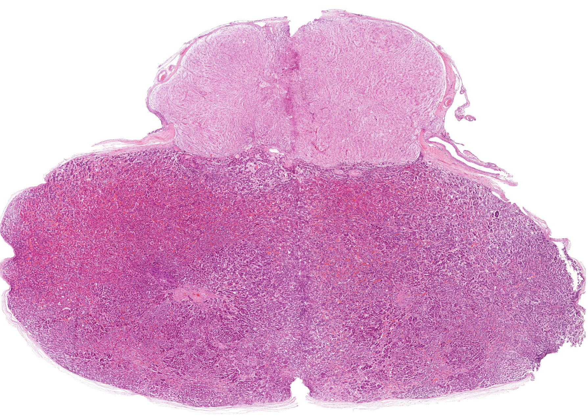
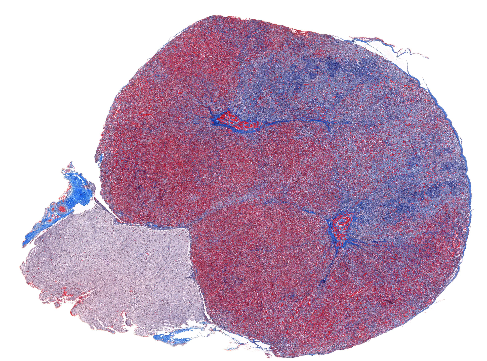
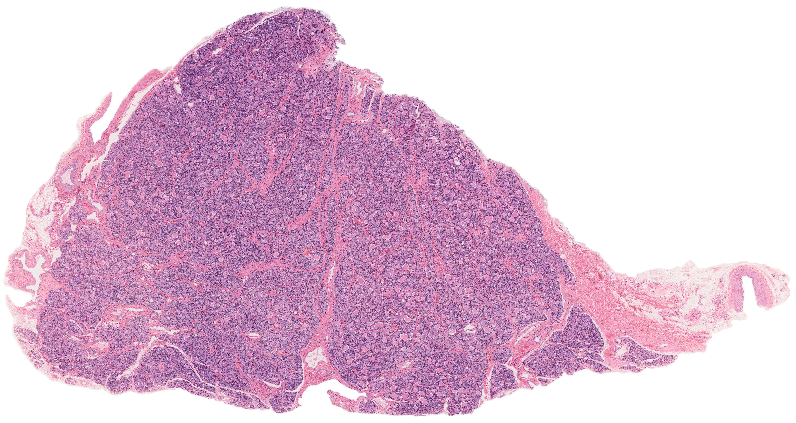
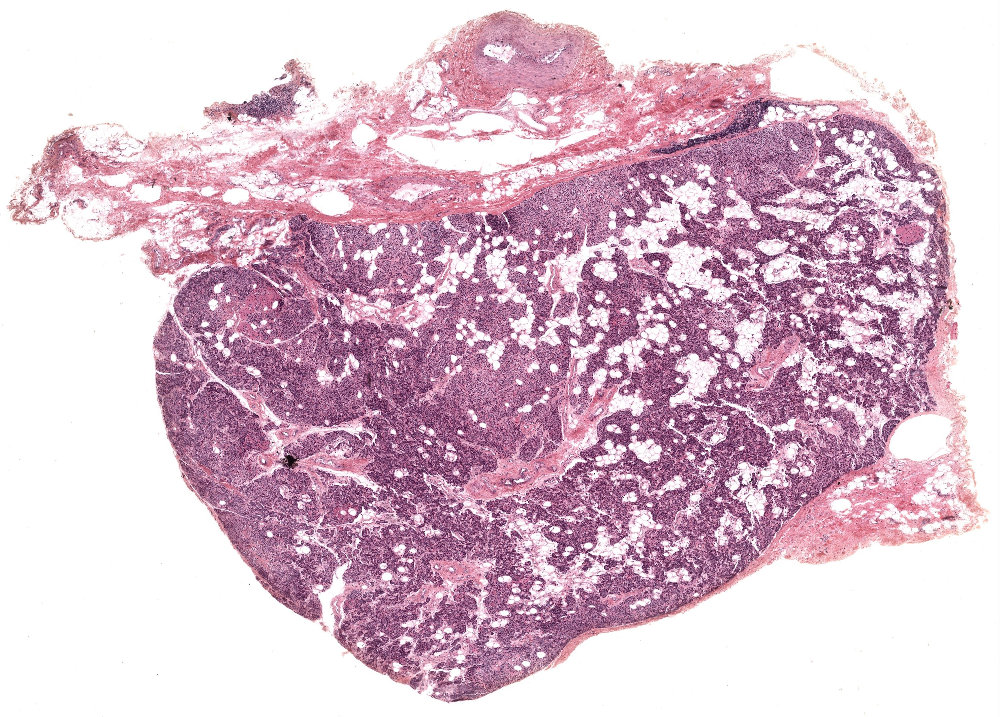
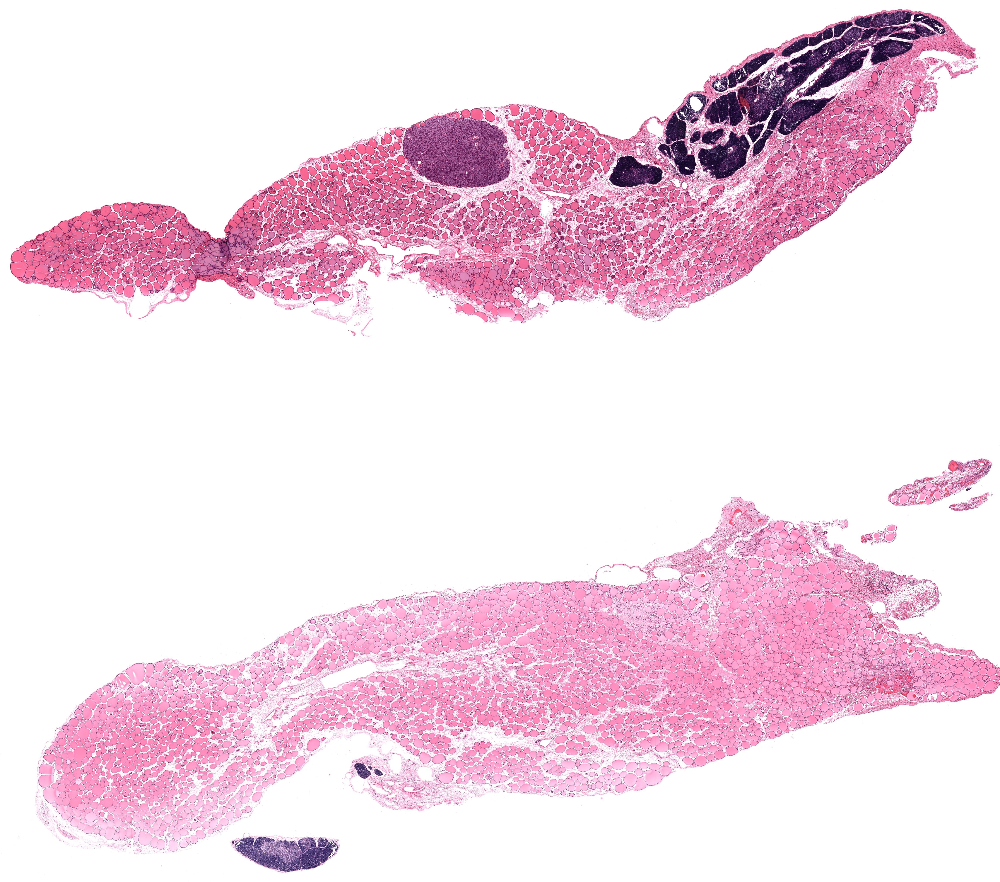
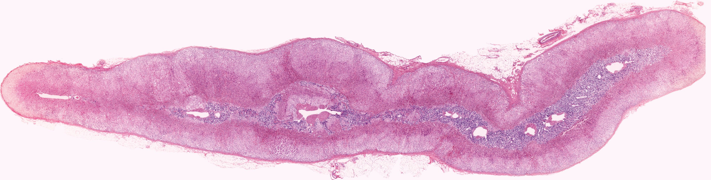
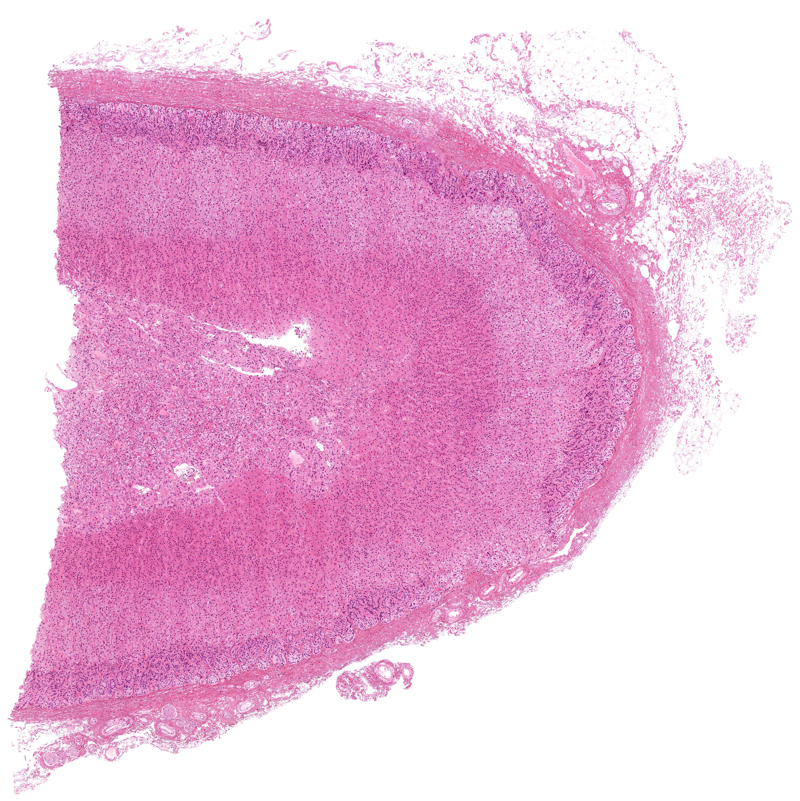
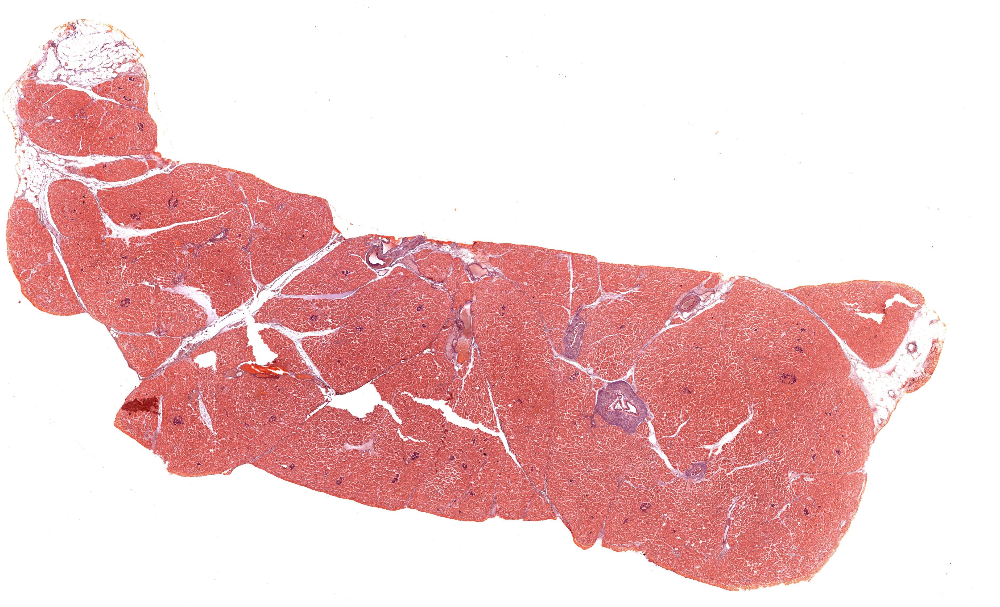
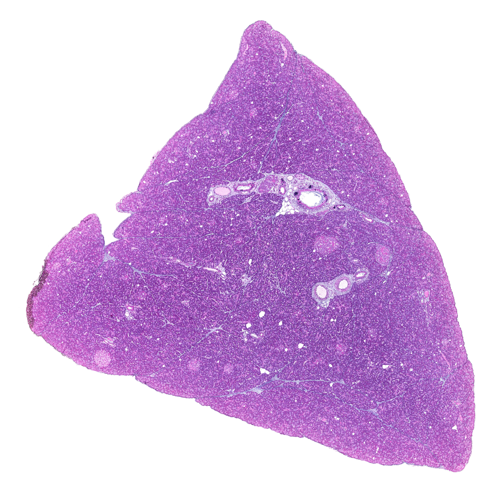
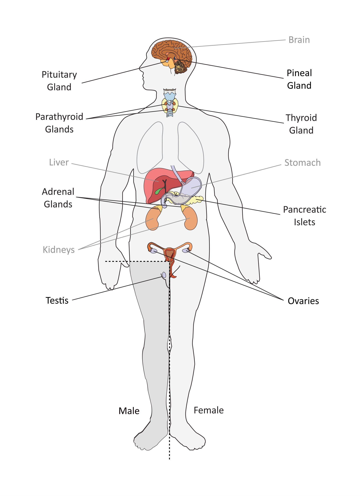

Chapter 13 · 器官系统
内分泌腺
Endocrine Glands · 6 小节 · 11 张切片 · 32 张电镜 · 本地概览 13 张
本章导语
内分泌腺没有导管，腺细胞分泌的激素直接进入血液，因此切片上最醒目的特征是丰富的有孔毛细血管和成团、成索或成滤泡排列的腺细胞。本章依次观察垂体、甲状腺、甲状旁腺、肾上腺和胰岛：先分清腺垂体与神经垂体，再掌握甲状腺滤泡与滤泡旁细胞，随后比较肾上腺三带的结构与分泌产物，最后在胰腺中辨认染色浅淡的胰岛。
复习重点
- 掌握腺垂体远侧部三类细胞的染色特点与分泌产物。
- 掌握甲状腺滤泡的结构和滤泡旁细胞的位置。
- 掌握肾上腺皮质三带的分层与各自分泌的激素。
- 掌握胰岛主要细胞类型及其分泌的激素。
易混淆对比
- 腺垂体远侧部 vs 神经垂体：细胞索与血窦丰富还是无髓神经纤维与赫林体为主
- 甲状腺滤泡 vs 甲状旁腺细胞团：有无胶质充盈的滤泡腔
- 肾上腺皮质 vs 肾上腺髓质：三带分层结构还是嗜铬细胞团与中央静脉
阅读提示：本页中文要点为自编复习笔记，不是原站正文的翻译；标本图像为经作者书面许可保存的中分辨率概览，每张卡片保留 © 署名与原页面链接，“原站本章/原站切片”可查看高倍与结构标注。本站为 Histology Guide 的非官方中文学习改编版，未经其认可或背书。
垂体
Pituitary
- 垂体分腺垂体和神经垂体，腺垂体包括远侧部、结节部和中间部。
- 远侧部细胞按染色分嗜酸性、嗜碱性和嫌色细胞三类。
- 嗜酸性细胞数量较多，分泌生长激素和催乳激素。
- 嗜碱性细胞分泌促甲状腺激素、促肾上腺皮质激素和促性腺激素。
- 神经垂体由无髓神经纤维、垂体细胞和赫林体构成，不含腺细胞，赫林体是神经分泌颗粒的局部聚集。
低倍镜低倍镜下先区分染色深的腺垂体与染色浅的神经垂体
高倍镜高倍镜下按胞质染色区分远侧部三类细胞并寻找赫林体
易混提示：神经垂体的垂体细胞易被误认为腺细胞，其核小而染色深且无分泌颗粒。
相关标本 · 2

点击图片放大 · 本地概览
MH 149 Pituitary
垂体
H&E
本地概览
1789×1273
图像 © Histology Guide 及/或原始贡献者 · 非商业教育用途，经许可保存；原页面链接见下方

点击图片放大 · 本地概览
MH 150a Pituitary
垂体（远侧部与神经部）
Azan
本地概览
2910×2157
图像 © Histology Guide 及/或原始贡献者 · 非商业教育用途，经许可保存；原页面链接见下方
示意图 1 幅（在线查看）
甲状腺
Thyroid
- 实质由大量甲状腺滤泡构成，滤泡腔内充满嗜酸性胶质。
- 滤泡上皮细胞形态随功能状态变化，可呈扁平、立方或柱状。
- 滤泡旁细胞位于滤泡之间或滤泡上皮内，分泌降钙素。
- 滤泡旁细胞胞体较大、染色浅，在 H&E 下较难与上皮区分。
低倍镜低倍镜下确认滤泡的大小、形态与胶质染色深浅
高倍镜高倍镜下观察滤泡上皮高度，并在滤泡间寻找滤泡旁细胞
易混提示：制片时胶质可收缩与上皮分离，形成假空泡，不要误认为功能活跃。
相关标本 · 1

点击图片放大 · 本地概览
MH 151 Thyroid
甲状腺
H&E
本地概览
3714×1975
图像 © Histology Guide 及/或原始贡献者 · 非商业教育用途，经许可保存；原页面链接见下方
甲状旁腺
Parathyroid
- 实质由主细胞和嗜酸性细胞组成，主细胞分泌甲状旁腺激素。
- 主细胞可分暗细胞与亮细胞，反映功能状态的差异。
- 嗜酸性细胞随年龄增长而增多，其功能尚不明确。
- 腺细胞排列成团或成索，间质内有较多脂肪细胞。
低倍镜低倍镜下寻找被结缔组织分隔的细胞团与脂肪细胞
高倍镜高倍镜下区分主细胞与胞质嗜酸的嗜酸性细胞
易混提示：甲状旁腺与甲状腺滤泡旁细胞团形态相近，需依据有无滤泡结构定位。
相关标本 · 1

点击图片放大 · 本地概览
MH 154 Parathyroid
甲状旁腺
H&E
本地概览
2968×2129
图像 © Histology Guide 及/或原始贡献者 · 非商业教育用途，经许可保存；原页面链接见下方
甲状腺、甲状旁腺与胸腺
Thyroid-Parathyroid-Thymus
- 同一切面可同时观察三种器官，便于比较其结构差异。
- 甲状腺以滤泡为标志，甲状旁腺以细胞团为标志，胸腺以小叶为标志。
- 对照观察有助于建立器官轮廓与细胞排列方式的联系。
低倍镜低倍镜下先按滤泡、细胞团和小叶三种轮廓划分器官
高倍镜高倍镜下确认各器官的特征性结构后再比较染色差异
易混提示：三种组织染色相近，低倍下若不先定轮廓，容易把细胞团误当作滤泡间质。
相关标本 · 1

点击图片放大 · 本地概览
MHS 209 Thyroid-Parathyroid-Thymus
甲状腺、甲状旁腺与胸腺
H&E
本地概览
4585×4047
图像 © Histology Guide 及/或原始贡献者 · 非商业教育用途，经许可保存；原页面链接见下方
肾上腺
Adrenal Glands
- 皮质由外向内分球状带、束状带和网状带三层。
- 球状带分泌盐皮质激素，束状带分泌糖皮质激素，网状带分泌性激素。
- 束状带细胞排列成索，胞质含大量脂滴，制片后呈泡沫状。
- 髓质由嗜铬细胞构成，分泌肾上腺素和去甲肾上腺素。
- 髓质内可见中央静脉，嗜铬细胞经它接收交感神经支配。
低倍镜低倍镜下由被膜向内依次确认皮质三带与中央髓质
高倍镜高倍镜下观察束状带细胞索排列和髓质嗜铬细胞的染色
易混提示：网状带与髓质交界不规则，低倍下容易把深入髓质的皮质索误认为髓质。
相关标本 · 2

点击图片放大 · 本地概览
MH 155a Adrenal Gland
肾上腺
H&E
本地概览
3091×785
图像 © Histology Guide 及/或原始贡献者 · 非商业教育用途，经许可保存；原页面链接见下方

点击图片放大 · 本地概览
MHS 216 Adrenal Gland
肾上腺（MHS 216）
H&E
本地概览
4557×4565
图像 © Histology Guide 及/或原始贡献者 · 非商业教育用途，经许可保存；原页面链接见下方
胰岛
Pancreatic Islets
- 胰岛散在于外分泌部之间，为染色浅淡的细胞团。
- A 细胞分泌高血糖素，B 细胞分泌胰岛素，D 细胞分泌生长抑素。
- B 细胞数量最多，多位于胰岛中央，分泌胰岛素。
- 胰岛内有丰富的有孔毛细血管，便于激素入血。
低倍镜低倍镜下在深染的腺泡之间寻找浅染的圆形细胞团
高倍镜高倍镜下确认胰岛内细胞索与丰富的毛细血管
易混提示：小叶间结缔组织切面也可呈浅染区，需看其内是否有细胞索。
相关标本 · 4

点击图片放大 · 本地概览
MH 131 Pancreas
胰腺（H&E）
Endocrine Pancreas
H&E
本地概览
2606×1551
图像 © Histology Guide 及/或原始贡献者 · 非商业教育用途，经许可保存；原页面链接见下方

点击图片放大 · 本地概览
MHS 211 Pancreas
胰腺（MHS 211）
Endocrine Pancreas
H&E
本地概览
4309×2421
图像 © Histology Guide 及/或原始贡献者 · 非商业教育用途，经许可保存；原页面链接见下方

点击图片放大 · 本地概览
MH 133 Pancreas
胰腺（醛复红染色）
Endocrine Pancreas
Aldehyde Fuchsin
本地概览
3758×2284
图像 © Histology Guide 及/或原始贡献者 · 非商业教育用途，经许可保存；原页面链接见下方

点击图片放大 · 本地概览
UCSF 295 Pancreas
胰腺（Gomori 染色）
Endocrine Pancreas
Gomori's Stain
本地概览
4810×4804
图像 © Histology Guide 及/或原始贡献者 · 非商业教育用途，经许可保存；原页面链接见下方
本章其他图谱

点击图片放大 · 本地概览
Fig 006 Endocrine Glands
（中文名待编写）
本地概览
2048×2799
图像 © Histology Guide 及/或原始贡献者 · 非商业教育用途，经许可保存；原页面链接见下方
本章电镜照片
32 张 · 需在线查看
电镜照片 32 张（在线查看）
自测
8 题 · 自编
先自己回答，再点“显示答案”。标记为易错的项目会进入复习模式。
腺垂体远侧部的嗜酸性细胞分泌哪些激素？
概念
生长激素和催乳激素
赫林体位于何处，由什么构成？
识别
位于神经垂体，为轴突内聚集的神经分泌颗粒
甲状腺滤泡旁细胞分泌什么激素？
概念
降钙素
肾上腺束状带细胞胞质为什么呈泡沫状？
概念
胞质含大量脂滴，制片时脂滴被溶解
肾上腺髓质的嗜铬细胞分泌什么？
概念
肾上腺素和去甲肾上腺素
胰岛中数量最多的细胞是哪一类，分泌什么？
概念
B 细胞，分泌胰岛素
甲状旁腺主细胞分泌什么激素？
概念
甲状旁腺激素
怎样在低倍镜下把胰岛与外分泌部区分开？
识别
胰岛为浅染的细胞团，外分泌部腺泡染色深且密集